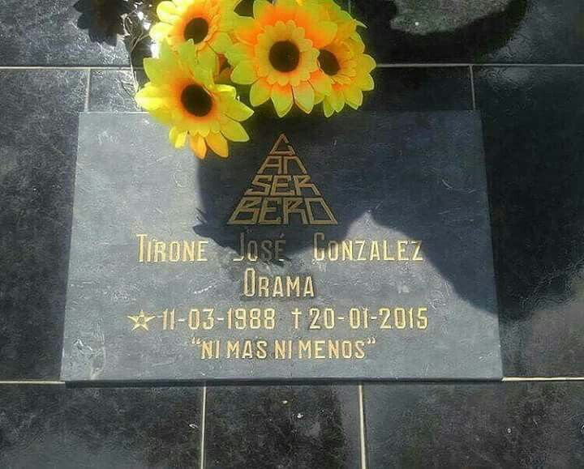

Ultima Actividad
- "¿Quién ha muerto?"- 15/01/2015 - 10:58 PM
- "Me cuesta dormir por las noches y no he matado a ningún estudiante." - 13/01/2015 - 10:08 PM
- "Para lograrlo hay que quererlo. pero no más de la cuenta" - 13/01/2015 - 4:01 PM
- "Ultima entrevista" 12/12/2014
- "Ultimo concierto" 01/11/2014
- "Ultima Publicación" 18/01/2015
Primera Versión de su Muerte
La hipótesis que emitió la prensa en ese momento, suponía que Canserbero se había lanzado desde el décimo piso del edificio la madrugada del 20 de enero.56 En un principio, se dijo que el rapero se encontraba en el departamento de Carlos Molnar, también conocido como «Stoperro», bajista de la banda de reggae Zion TPL, quien era amigo y compañero de trabajo, con la intención de «ayudar a Canserbero, ya que sufría de esquizofrenia y estaba pasando por un grado agudo de depresión».7 Horas más tarde, Canserbero «en medio de una crisis psicótica, irrumpió en la habitación de Molnar con un cuchillo, apuñalándolo en reiteradas ocasiones» en presencia de Natalia Améstica (María Natalia Améstica Moraga), novia de Molnar y única testigo de los hechos. Inmediatamente, «se había dirigido hacia la cocina, y en un acto de desesperación, se suicidó lanzándose por la ventana».8 El hermano de Natalia, Guillermo Orlando Améstica Moraga, también conocido como «Nano», fue quien brindó esta versión a la prensa en horas de la mañana del día del suceso, dándose el caso por cerrado por parte del CICPC del estado Aragua.8
Impacto hoy día
| Nombre de la CAN-ción | Cantidad de reproducciones | Año de Lanzamiento |
|---|---|---|
| Jeremías 17:5 | 522 Millones | 2012 |
| Querer Querernos | 385 Millones | 2011 |
| Maquiavélico | 366 Millones | 2012 |
| Mundo de Piedra | 225 Millones | 2012 |
| Pensando en Ti | 220 Millones | 2011 |
| De la Vida Como Película | 159 Millones | 2011 |
Algunas de sus frases
“Llora pero valora mientras sonrías, alguien decía que no siempre
lloverá, en cambio siempre, mañana será otro día.”
Mañana será otro día - Canzoo - 2008
"Conocemos a las personas cuando por últimas veces las vemos."
De La Vida Como Película, Tragedia, Comedia y Ficción - 2011
"El no perdonar es causa de tantas tumbas sin flores"
Canbiate - Guía para la Acción - 2008
Vida personal
Tirone al críarse en un entorno de bajos recursos desde pequeño siempre demostró tener apreciación por las pequeñas alegrías de su vida; siendo su hermano uno de sus ejemplos de vida, el cual también sería uno de los personajes de los eventos más importantes en la vida de Canserbero, al ser asesinado por un pandillero de la localidad en la que vivían. Este suceso junto a la muerte de su madre por un paro cardíaco serían las mayores influencias en las letras y la visión que tenía este artista por el mundo. Siendo activamente portavoz de los barrios y la desigualdad que afrontaba Venezuela en sus calles.
Lugar de Fallecimiento
El cuerpo del rapero fue encontrado a las afueras del edificio Camino Real de la urbanización Andrés Bello, en la calle Juan Vicente González del municipio Girardot. Esa misma noche, Améstica también había asesinado a su propia pareja sentimental, Carlos Molnar. Guillermo Améstica, hermano de Natalia, también participó en el crimen.